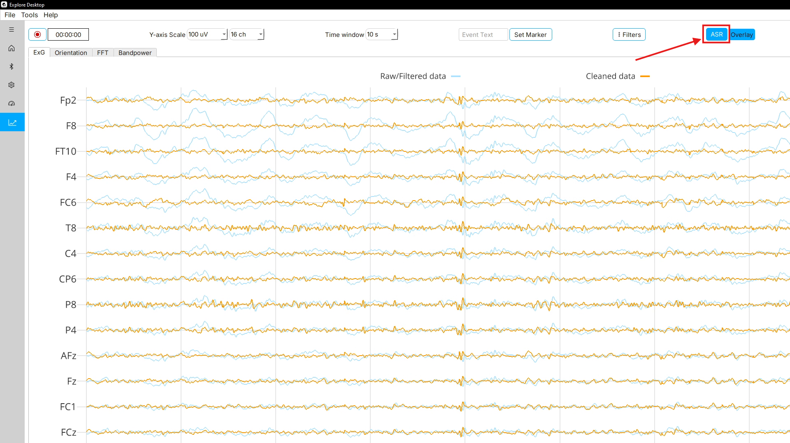
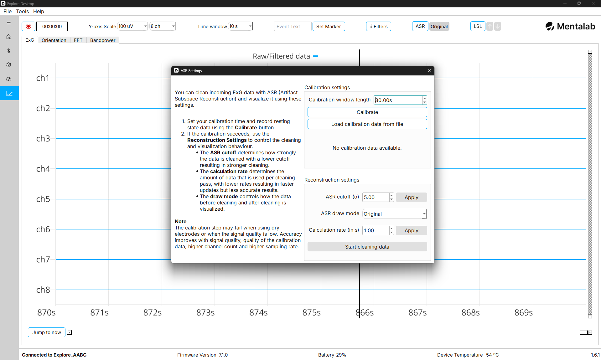
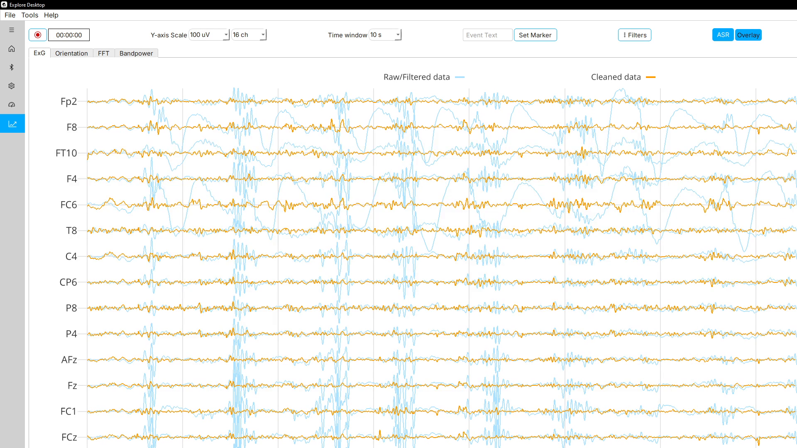

Artifact Subspace Reconstruction
Explore Desktop can clean incoming ExG data in real time using Artifact Subspace Reconstruction, or ASR, and visualize the cleaned signal next to the original signal.
ASR is an adaptive method for reducing high-amplitude artifacts, such as those caused by eye blinks, jaw clenching, muscle activity, movement, or electrode disturbances, in multi-channel EEG. It first learns what clean data looks like for your setup from a short calibration recording. It then continuously compares incoming data against that reference and reconstructs the parts that deviate too strongly from it, using the remaining, unaffected channels.
| ASR in Explore Desktop is a real-time visualization and streaming feature. To apply ASR to an existing recording after a session, use Explore Signals and refer to the Artifact Subspace Reconstruction section in the Explore Signals Guide. |
| ASR can remove brain signal along with artifacts. If you plan to work with cleaned data, make sure you understand the method and its limitations before drawing conclusions from it. |
Before you start
ASR works best when the following conditions are met:
-
The signal is EEG. The algorithm is designed for EEG. Output for other biosignals, such as ECG or EMG, may be worse, because more signal than artifact may be removed.
-
Several channels are active. ASR reconstructs an affected channel from the other channels, so it needs multiple channels to work with. Research suggests that ASR achieves effective artifact reduction for a standard
20-channel EEG[1]. Accuracy improves with higher channel counts and higher sampling rates. -
Signal quality is good. Check your impedances before calibrating. Calibration may fail when using dry electrodes or when the signal quality is low.
-
Impedance measurement is turned off. ASR is not available while impedance measurement is running. If you open the ASR dialog during an impedance measurement, Explore Desktop reports that the ASR processor is not available.
Opening the ASR settings
To open the ASR settings, navigate to the Visualization page and click ASR in the toolbar above the plot, next to Filters.

The button immediately to the right of ASR is the draw mode button. It shows the currently selected draw mode.
This opens the ASR Settings dialog, which is divided into two sections:
-
Calibration settings— teach ASR what clean data looks like for your setup. -
Reconstruction settings— control how strongly data is cleaned, how often it is cleaned, and how it is displayed.
The Reconstruction settings section stays disabled until calibration data is available.

In the state shown above, ASR has not been calibrated yet. The status text reads No calibration data available. and cleaning cannot be started.
Workflow
The typical workflow is:
-
Calibrate ASR, either by recording resting-state data or by loading calibration data from a file.
-
Adjust the reconstruction settings if needed.
-
Click Start cleaning data.
-
Select a draw mode to compare the original and cleaned signals.
Calibration
ASR needs a reference for what clean data looks like on your subject, montage, and device configuration. This reference is built from a short calibration recording that should contain as few artifacts as possible.
Explore Desktop does not use the calibration recording as-is. It first filters the data, then automatically discards the noisiest windows and any flat channels, and computes the ASR reference from what remains. Because of this, calibration fails if too little usable data is left over.
Recording calibration data
To calibrate ASR:
-
Set
Calibration window lengthto the number of seconds of data you want to record.The default is
30 s. The accepted range is10 sto120 s. -
Ask the subject to sit still and relaxed, with eyes open and blinking kept to a minimum. Avoid jaw clenching, talking, and head movement for the duration of the calibration.
-
Click Calibrate.
The button changes to
Calibrating…and stays disabled until calibration finishes. -
Wait for the status text below the buttons to change.
The status text reports the state of calibration:
| Status text | Meaning |
|---|---|
|
ASR has no reference yet. Cleaning cannot be started. |
|
Calibration finished recording and Explore Desktop is preparing the reference. This step takes a moment. |
|
ASR is calibrated and ready. The |
If calibration fails, Explore Desktop reports a calibration error and the reference is not created. This usually means the calibration recording contained too many artifacts or the signal quality was too low.
To recover from a failed calibration:
-
Check and improve your impedances, then calibrate again.
-
Increase the calibration window length so that more usable data is available.
-
Make sure the subject stays still and relaxed while calibration is running.
| You cannot calibrate while ASR is cleaning data. Click Stop cleaning data first, then calibrate again. |
Loading calibration data from a file
Instead of recording new calibration data, you can reuse a clean segment from an earlier session. This is useful when you want the same reference across sessions, or when the current subject cannot easily hold still.
To load calibration data:
-
Click Load calibration data from file.
-
Select a
.csvfile.
Explore Desktop checks the file against the connected device before using it. The file must satisfy all of the following:
-
It contains a
TimeStampcolumn. -
It contains exactly one column per channel of the connected device, in addition to the
TimeStampcolumn. -
The column names match the channel names configured on the Settings page. The comparison ignores capitalization.
-
The sampling rate implied by the timestamps matches the sampling rate of the connected device.
If any check fails, Explore Desktop lists the reasons why the file could not be loaded, so you can correct the file or the device configuration and try again.
A .csv file recorded with Explore Desktop satisfies these conditions as long as the channel names and the sampling rate still match the current device configuration.
| Loading a file replaces the current ASR reference. If the loaded segment is too noisy to build a stable reference from, Explore Desktop reports that the calibration data could not be used and keeps ASR uncalibrated. In that case, choose a cleaner segment. |
Reconstruction settings
ASR cutoff
The ASR cutoff (σ) field sets the standard deviation cutoff used during cleaning. It determines the threshold, relative to the calibration data, above which a portion of the signal is treated as an artifact and reconstructed.
-
A lower cutoff causes more data to be recognized as artifacts, resulting in stronger cleaning.
-
A higher cutoff causes less data to be recognized as artifacts, preserving more of the original signal.
The default is 5.0 and the accepted range is 3.0 to 20.0.
Common reference points are:
-
3.0— aggressive -
5.0— standard, and the default in Explore Desktop and Explore Signals -
20.0— conservative
To change the cutoff, enter a new value and click Apply next to the field.
| Applying a new cutoff rebuilds the ASR reference from the calibration data you already recorded or loaded. You do not need to calibrate again. |
Calculation rate
The Calculation rate (in s) field sets how often ASR runs over the incoming data.
Explore Desktop keeps a rolling buffer of the most recent 5 s of raw data. Every time the calculation rate elapses, ASR is applied to that buffer and the newly cleaned samples are handed to the plot and, if enabled, to the LSL stream.
-
A lower value updates the cleaned trace more frequently and reduces the delay before you see the effect of ASR.
-
A higher value uses more accumulated data per pass and reduces the processing load.
The field opens at 1.0 s and the accepted range is 0.1 s to 5.0 s.
To change the calculation rate, enter a new value and click Apply next to the field.
| Low calculation rates increase CPU load, particularly at high channel counts and high sampling rates. If the visualization becomes sluggish, increase the calculation rate. |
ASR draw mode
The ASR draw mode setting controls how the original and cleaned signals are drawn on the Visualization page:
| Draw mode | Displayed signal |
|---|---|
|
Only the original, uncleaned signal, in blue. This is the standard Visualization page view. |
|
Only the ASR-cleaned signal, in orange. |
|
Both signals at once. The original signal is drawn in a lighter blue and the cleaned signal in orange, so that you can see exactly which parts of the signal ASR changed. |
Overlay is the most useful mode while you are tuning the cutoff, because it shows what ASR reduced and what it left untouched.

In the example above, the large deflections in the blue trace are artifacts. The orange trace shows the same data after ASR has reconstructed the affected segments.
Whenever cleaned data is drawn, a legend above the plot identifies the two traces as Raw/Filtered data and Cleaned data.
You can change the draw mode either from the drop-down menu in the ASR Settings dialog or from the draw mode button next to ASR on the Visualization page. Clicking that button cycles through Original, Cleaned, and Overlay. It shows the currently selected mode and stays greyed out until ASR has been calibrated.
Starting and stopping cleaning
To start cleaning, click Start cleaning data in the ASR Settings dialog. The button then changes to Stop cleaning data.
If the draw mode is still set to Original when you start cleaning, Explore Desktop switches it to Overlay automatically so that you can see the result immediately.
To stop cleaning, click Stop cleaning data. The plot keeps showing the cleaned samples that were already computed, so you can still switch draw modes and scroll back through them.
What ASR does and does not affect
ASR runs on the raw data coming from the device, in parallel with the normal visualization path.
-
Filters. ASR applies its own filters internally, independently of the settings in the Filters dialog. It applies a band-stop filter between
45 Hzand55 Hzand a band-pass filter up to40 Hz, with a lower edge of0.1 Hzbelow a sampling rate of1000 Hzand2 Hzat and above it. Changing the visualization filters therefore does not change the cleaned trace, and the two traces may differ in baseline and in high-frequency content even where ASR changed nothing. -
Recordings. Recordings made with Record contain the raw data from the device. Enabling ASR does not change what is written to file. To keep a cleaned copy of a session, either stream the cleaned data over LSL and record it with LSL-aware software, or apply ASR to the recording afterwards in Explore Signals.
-
Impedance measurement. ASR and impedance measurement cannot run at the same time.
Streaming cleaned data over LSL
Explore Desktop can push the ASR-cleaned signal to Lab Streaming Layer instead of the raw signal.
To stream cleaned data:
-
Calibrate ASR and click Start cleaning data.
-
Close the ASR Settings dialog and click LSL on the Visualization page.
-
Select the
Push ASR cleaned, filtered datacheckbox. -
Click Push data to LSL.
The checkbox can only be selected while ASR is cleaning data and while Explore Desktop is not already pushing to LSL. To switch between raw and cleaned data, stop pushing to LSL, change the checkbox, and start pushing again.
The stream names do not change when you push cleaned data. The ExG stream is still published as Explore_<DEVICE_ID>_ExG. Only its contents change.
| Because the stream name and metadata are identical, receiving software cannot tell whether a stream carries raw or ASR-cleaned data. Note in your experiment records which of the two you streamed. |
While cleaned data is being pushed to LSL, the calibration controls and the Start cleaning data button in the ASR Settings dialog are disabled. Stop pushing to LSL to re-enable them.
For general information about LSL in Explore Desktop, refer to the Lab Streaming Layer page.
Parameter reference
| Parameter | Default | Range | Effect |
|---|---|---|---|
Calibration window length |
|
|
Length of the resting-state recording used to build the ASR reference. Longer windows give a more reliable reference but take longer to record. |
ASR cutoff (σ) |
|
|
Standard deviation threshold for treating a portion of the signal as an artifact. Lower values clean more aggressively. |
Calculation rate |
|
|
How often ASR is applied to the rolling |
ASR draw mode |
|
|
Which of the two traces is drawn on the Visualization page. |
Troubleshooting
| Message or symptom | What to do |
|---|---|
ASR processor is not available |
Impedance measurement is running, or the device is not fully connected. Turn off impedance measurement and try again. |
Calibration not possible because ASR is running |
Click Stop cleaning data, then calibrate again. |
Calibration error, or the calibration data could not be cleaned |
The calibration segment contained too many artifacts. Improve impedances, keep the subject still, increase the calibration window length, and calibrate again. |
The loaded calibration file is rejected |
Check that the file has a |
The reconstruction settings are greyed out |
No calibration data is available yet. Calibrate, or load calibration data from a file. |
The draw mode button is greyed out |
ASR is not calibrated yet. Calibrate, or load calibration data from a file. |
The cleaned trace does not line up with the original trace |
ASR filters its input internally and produces a zero-mean signal. A baseline offset between the two traces is expected, especially when the visualization filters differ from the internal ASR filters. |
The visualization becomes sluggish after starting ASR |
Increase the calculation rate, reduce the number of visible channels, or lower the sampling rate. |
For more information or support, contact support@mentalab.com.